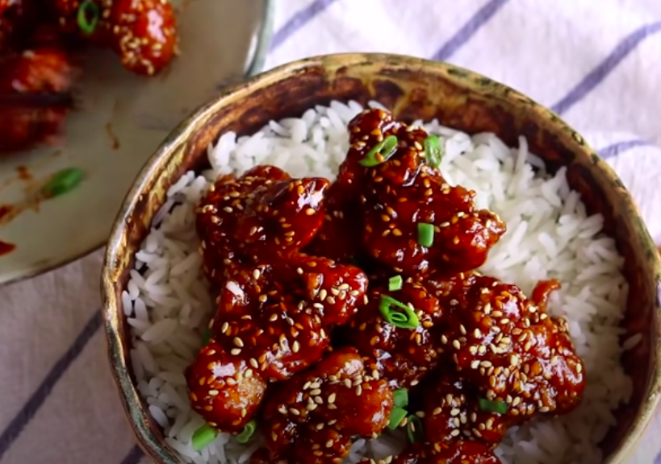

Sesame Chicken

Description
This recipe comes from Souped Up Recipes
she is a youtuber that post different meal recipes. This is also one of my favorites to get at any asian resturant. Try it out I promise that you'll love it.
Ingredients
Ingredients to marinate the chicken (Serve 2-3 people with some rice)
- 1 lb chicken thigh, cut into 1.5 inches cubes
- 2 cloves of garlic
- black pepper to taste
- 1.5 tsp of soy sauce
- 1/2 tsp of salt
- 3/8 tsp of baking soda
- 1 egg white
- 0.5 tbsp of starch (add it to the marinade)
- 1 cup of Potato starch (use it to coat the chicken)
- 2 cups of oil to fry the chicken
Ingredients for the sauce
- 2 tbsp of Honey
- 3 tbsp of brown sugar
- 2.5 tbsp of Soy sauce
- 3 tbsp of water
- 2.5 tbsp of ketchup
- 1 tbsp of vinegar
- Sweet potato starch water to thicken the sauce (2 tsp of potato starch mixed with 2 tsp of water)
- 1 tbsp of sesame oil
- 1.5 tbsp of toasted sesame seeds
- Diced scallion as a garnish
Steps
- Cut some boneless and skin on chicken leg into 1-inch size pieces. You can use chicken breast if you wish to.
- Marinate the chicken with 1 tsp of grated garlic, 1.5 tsp of soy sauce, 1/2 tsp of salt, some black pepper to taste, 3/8 tsp of baking soda, 1 egg white, and 1/2 tbsp of starch.
Cornstarch, potato or sweet potato starch, they all work, depends on what you used for the coating later. Mix everything until well combined. Cover it and let it sit for 40 minutes.
Add half of the starch into a big container. Spread it out. Add in the chicken. Cover the meat with the other half of the starch.
Put on the lid and shake for a few minutes or until the chicken is coated nicely
- Heat up the oil to 380 F. Add the chicken piece by piece. In less than 2 minutes, you can feel that the surface is getting crispy and the color is slightly yellow. Take them out.
Then we gonna do the second batch. Before that, you might want to fish out all those small little bits. It is optional but it does affect the quality of the oil.
- Keep the temperature at 380 F, and fry the second batch of the chicken. Once you are done, let all the chicken rest for about 15 minutes and we gonna double fry the chicken.
Double frying will stabilize the crunchiness so it last longer. At the end we will coat the chicken with some glossy sauce If you don’t double fry it, the chicken might not be
crispy while serving. You just keep an eye on the color. In about 2 or 3 minutes, it will reach that beautiful golden color. Take them out and set it aside.
- Next, we gonna make the sauce. In a large bowl, add in 3 tbsp of brown sugar, 2 tbsp of liquid honey, 2.5 tbsp of soy sauce, 2.5 tbsp of ketchup, 3 tbsp of water, 1 tbsp of vinegar.
Mix them until well combined.
- Put your wok (or skillet) on the stove and pour all the sauce in. There is some sugar sink in the bottom of the bowl, make sure you clean that. Keep stirring the sauce on medium heat.
Bring it to a boil and pour in some potato starch water to thicken the sauce. This just 2 tsp of potato starch mixed with 2 tsp of water. Keep stirring until it reaches a thin syrup texture. Introduce the chicken back into the wok, along with a drizzle of sesame oil and 1.5 tbsp of a toasted sesame seed. Toss everything until the chicken is coated nicely. Take them out. Garnish it with some diced scallion and you are done.